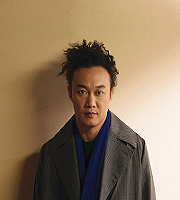

周杰伦（Jay Chou）
华语流行男歌手、演员、词曲创作人、MV及电影导演、编剧及制作人。代表作品有《青花瓷》《告白的气球》《花海》《七里香》等
周传雄（Steve Chou）
代表作：《黄昏》、《我的心太乱》 《寂寞沙洲冷》、《青花》、《关不上的窗》 主要成就：2009音乐大典-年度最佳唱作人、2007第一届无线音乐俱乐部颁奖典礼年度最畅销作曲奖、 2006东南劲爆音乐榜最佳制作人。

陈奕迅(Eason Chan)
1974年7月27日出生于香港，中国香港男歌手、演员，毕业于英国金斯顿大学。 代表作品：《爱情转移》、《十年》、《浮夸》、《k歌之王》 主要成就：香港十大劲歌金曲最受欢迎男歌手，香港十大中文金曲全国最佳男歌手，全球华语歌曲排行榜最佳男歌手
薛之谦（Joker Xue）
1983年7月17日出生于上海市 职业：歌手、演员、主持人 代表作品：《认真的雪》、《演员》、《丑八怪》、《绅士》